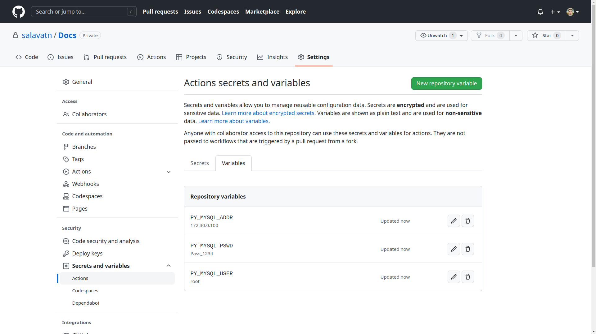

Environment Variables
1. Linux
1.1. Check variables
env
1.2. Add new variable (temporary)
export ACCESS_KEY='LSOED3kNEF9NWLS0KWNW'
export EMAIL='salavat@nigmatullin.net'
echo $ACCESS_KEY
# LSOED3kNEF9NWLS0KWNW
echo $EMAIL
# salavat@nigmatullin.net
The lifecycle of this variable will be one active terminal session. After closing the terminal -- the variable will be deleted.
To save the variable forever, you need to add a command to the file ".bashrc"
1.3. Add new variable (forewer)
- Need find the file
.bashrc - Add
export key="value"command and save - Re-open terminal and check created variable
sudo find /home -name ".bashrc"
# /home/salavat/.bashrc
echo "export CITY='PARIS'" >> /home/salavat/.bashrc
echo $CITY
# PARIS
env | grep "CITY"
# CITY=PARIS
2. Python
2.1. Read the system variables:
import os
os_env = os.environ
os_env = dict(os_env)
print(f"Count of variables: \t{len(os_env)}")
print(f"Variable Keyword: \t\t{os_env.keys()}")
Count of variables: 55
Variable Keyword:
dict_keys(['PATH', 'LC_MEASUREMENT', 'XAUTHORITY', 'LC_TELEPHONE', 'XDG_DATA_DIRS', 'LC_TIME', 'DBUS_SESSION_BUS_ADDRESS', 'XDG_CURRENT_DESKTOP', 'QT_AUTO_SCREEN_SCALE_FACTOR', 'SSH_AGENT_PID', 'LC_PAPER', 'SESSION_MANAGER', 'LOGNAME', 'PWD', 'PAM_KWALLET5_LOGIN', 'IM_CONFIG_PHASE', 'PYCHARM_HOSTED', 'XCURSOR_THEME', 'LANGUAGE', 'PYTHONPATH', 'KDE_SESSION_VERSION', 'SHELL', 'LC_ADDRESS', 'KDE_FULL_SESSION', 'XDG_SESSION_PATH', 'SYSTEMD_EXEC_PID', 'XDG_SESSION_DESKTOP', 'SHLVL', 'LC_IDENTIFICATION', 'KDE_APPLICATIONS_AS_SCOPE', 'LC_MONETARY', 'KDE_SESSION_UID', 'XDG_CONFIG_DIRS', 'LANG', 'XDG_SEAT_PATH', 'XDG_SESSION_ID', 'XDG_SESSION_TYPE', 'DISPLAY', 'GTK_RC_FILES', 'LC_NAME', 'XDG_SESSION_CLASS', 'XCURSOR_SIZE', 'PYTHONIOENCODING', 'GPG_AGENT_INFO', 'DESKTOP_SESSION', 'USER', 'GTK2_RC_FILES', 'QT_ACCESSIBILITY', 'LC_NUMERIC', 'SSH_AUTH_SOCK', 'XDG_SEAT', 'PYTHONUNBUFFERED', 'XDG_VTNR', 'XDG_RUNTIME_DIR', 'HOME'])
2.2. Get variable:
import os
env_path = os.getenv('PATH')
print(f'PATH Variable: {env_path}')
PATH Variable: /usr/local/sbin:/usr/local/bin:/usr/sbin:/usr/bin:/sbin:/bin:/usr/games:/usr/local/games:/snap/bin
2.2. Add custom variables to system:
- Create file
.env - Add customer variables:
PY_MYSQL_ADDR="172.30.0.100"
PY_MYSQL_USER="root"
PY_MYSQL_PSWD="Pass_1234"
Install python-dotenv
For more information about: dotEnv
pip install python-dotenv
Python code, step #1
- Load customer variables
from dotenv import load_dotenv
load_dotenv() # take environment variables from .env
Python code, step #2
- Checking system environment variables:
from dotenv import load_dotenv
import os
os_env = os.environ
env_before = list(dict(os_env).keys())
print(f"Count of variables:\t{len(os_env)}")
load_dotenv()
print(f"Count of variables:\t{len(os_env)}")
env_after = list(dict(os_env).keys())
env_difference = []
for element in env_after:
if element not in env_before:
env_difference.append(element)
print(f'New Env Variables:\t{env_difference}')
- Result:
Count of variables: 55
Count of variables: 58
New Env Variables: ['PY_MYSQL_ADDR', 'PY_MYSQL_USER', 'PY_MYSQL_PSWD']
Python code, step #3
- Check variables
from dotenv import load_dotenv
import os
load_dotenv()
os_env = dict(os.environ)
print(f"PY_MYSQL_ADDR: {os_env['PY_MYSQL_ADDR']}")
print(f"PY_MYSQL_USER: {os_env['PY_MYSQL_USER']}")
print(f"PY_MYSQL_PSWD: {os_env['PY_MYSQL_PSWD']}")
PY_MYSQL_ADDR: 172.30.0.100
PY_MYSQL_USER: root
PY_MYSQL_PSWD: Pass_1234
3. GitHub
- Open GitHub Repository
- Navigate to Settings > Secrets and variables > Actions
- In Variables tab click "New Repository variables"
- Add variables
